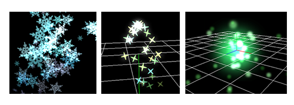

Render - Sprite¶
Overview¶
Here we explain the parameters that affect the drawing when "Sprite" is selected in the Render window.
When "Sprite" is selected, a simple square/rectangular surface will be drawn.

Parameters¶
"Render Settings" window
Rendering Order¶
Specify the order in which sprites are drawn among sprites generated from the same node. For "Order of spawn", the first generated particle is the first drawn, while in "Reversed", the first generated particle will be drawn last. That is, in the order of generation, the drawing of the last generated particle is given priority over the first generated particle.
Configuration¶
Specify how to draw the particle's sprite. In the case of "Billboard", the sprite always rotates to face the camera. In the case of "Rotated Billboard", the sprite rotates to face the camera while keeping the Z axis fixed. In the case of "Fixed Y-axis", the sprite rotates to face the camera while keeping the Y axis fixed. For "Fixed", the sprite will match the rotation setting of the particle.
Color All¶
Specify the color of the whole sprite.
Vertex Color¶
Specify the color of each vertex (corner) of the sprite.
Vertex Coords¶
Specify the coordinates of each vertex of the sprite.